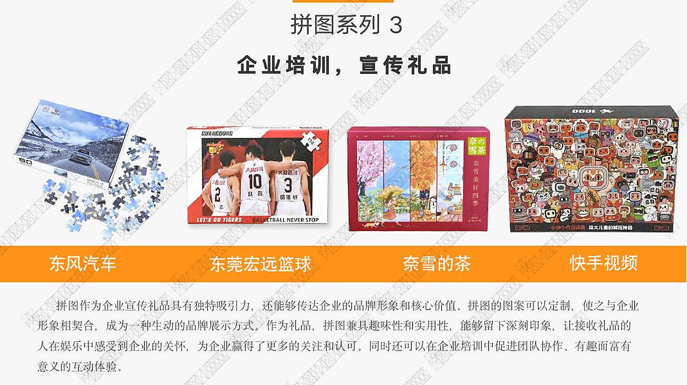
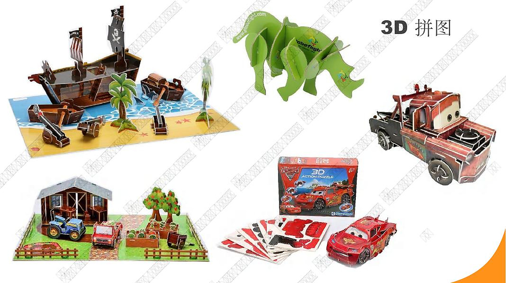

Formats documentés
Produits conçus pour l'art, les campagnes et le jeu.
Ces exemples utilisent des photos de produits et d'usine fournies par Qinyi. Les quantités commerciales et les détails confidentiels des clients ne sont discutés qu'avec des acheteurs qualifiés.

Cas 01 / Art et commerce culturel
Un puzzle conçu comme un objet cadeau complet.
Le programme combine des pièces de puzzle imprimées, une boîte de vente au détail assortie et un format de présentation qui met l'artwork au centre.
| Format | Puzzle personnalisé et boîte imprimée coordonnée |
|---|---|
| Périmètre de l'usine | Prépresse, impression, montage, découpe à l'emporte-pièce, finition, assemblage et emballage |
| Focus qualité | Couleur de l'illustration, séparation des pièces, qualité des bords, nombre de composants et correspondance de l'emballage |
| Adéquation acheteur | Artistes, musées, commerce culturel et cadeaux de marque |
Cas 02 / Communication d'entreprise
Illustration de campagne transformée en format tactile.
Le portfolio fourni par Qinyi documente les puzzles d'entreprise et de marketing de destination où l'artwork de la marque, la construction du puzzle et l'emballage extérieur fonctionnent comme un système visuel unique.
| Format | Puzzle plat avec emballage de vente au détail ou de présentation imprimé |
|---|---|
| Développement | Adaptation de l'illustration, sélection de la taille et du nombre de pièces, révision du dieline |
| Focus qualité | Référence de couleur de marque, calage de l'image, régularité de la découpe et conditionnement |
| Adéquation acheteur | Campagnes d'entreprise, destinations, événements et cadeaux employés |


Cas 03 / Jeu structurel en papier
Pièces imprimées plates conçues pour l'assemblage.
Un puzzle en papier 3D ajoute des tests structurels, l'ajustement des encoches et des instructions de montage au flux de travail normal d'impression et de découpe à l'emporte-pièce.
| Format | Composants en papier découpés à l'emporte-pièce imprimés, instructions et boîte |
|---|---|
| Développement | Révision de la structure, tests d'ajustement, outillage et séquence d'assemblage |
| Focus qualité | Identification des pièces, tolérance des fentes, intégrité des plis et ensembles complets |
| Adéquation acheteur | Éducation, aviation, tourisme, musées et thèmes sous licence |
Preuves du projet
Besoin d'une référence technique plus précise ?
Envoyez le type de produit, la quantité cible, la destination et l'aspect que vous devez valider. Qinyi peut identifier les formats pertinents et discuter des échantillons disponibles ou de la documentation du projet sous un accord de confidentialité approprié.
Soumettre un brief comparable